We predict the yearly yield of 13 crops in Balochistan, Punjab, Sindh from annual climate and soil wetness, and rank the crops by the share of a typical year's yield each keeps in a user's scenario. Two public sources are merged: a crop yield and climate dataset (10,296 monthly rows, 2001-2022) and NASA POWER soil wetness. After aggregation to one row per crop, province and year there are 773 rows. A scikit-learn pipeline learns the log-scale gap from each crop-province average plus a year trend; models are tuned with 5-fold cross-validation grouped by year and selected on validation years. The chosen Gradient Boosting scores test R² 0.885 and MAE 29.7 (crop-province mean baseline: 0.832 and 34.7), but not a better log-MAE, and most of the gain comes from the year trend. The model is served by a FastAPI app with HTML pages (local and on Vercel), a Streamlit app and a model repository on the Hugging Face Hub.
Water-intensive crops such as rice and sugarcane are hard to sustain in drought years in Punjab, Sindh and Balochistan. A farmer or agricultural extension officer needs to know which crops hold up when rain is scarce. The user enters a year's climate for a province, either typed in or taken from a real driest, typical or wettest year in the data, and receives every crop's predicted yield and its share of a typical year's yield, ranked. The task is regression on yield; the ranking divides two predictions of the same model, so no number is set by hand.
| Crop yield and climate | NASA POWER soil wetness | |
|---|---|---|
| Source | github.com/Abdullah-Masood-05/pakistan-crop-yield-vs-climate; upstream zenodo.org/records/15486470 | power.larc.nasa.gov/, monthly point API v2.10.1 (MERRA-2) |
| Collection method | Downloaded file; the repository does not state how it was collected or the weather source | Fetched by scripts/ml/fetch_nasa_power.py for 9 farming-area points, 3 per
province, equal weight |
| Licence | MIT (stated by the repository) | Licence not specified in the POWER catalog entry; free to use, citation requested |
| Date | Added to the repository 2026-11-14 | Accessed 2026-11-19 |
| Size | 10,296 monthly rows, 19 columns; 13 crops, 3 provinces, 2001-2022 | 2,376 monthly rows; root-zone soil wetness (0 to 1) |
The yield file has no month column and repeats each yearly yield on 12 monthly rows, with the same weather for every crop in a province. Training on monthly rows would show each yield 12 times, so we aggregate to one row per crop, province and year (rain and rain hours summed, the rest averaged) and merge soil wetness by province and year. 85 crop-province-years with Area = 0 (the crop was not grown or not reported: apple 22, grapes 41, pomegranate 22) are dropped, leaving 773 rows with 14 input features. The raw data has no personal identifiers. In the file, Yield = 25 x Production / Area, but the source does not state the unit, so we report dataset yield units. The raw file meets the guideline minimum of 5,000 rows and 15 columns; the modelling table is smaller because the yield is one number per year.
Yields span 2.83 to 747.73 dataset yield units across crops, so the target is modelled on a log scale. There are no empty cells; missing data shows up as Area = 0 years for three crops, which also leaves grapes with no Punjab years and pomegranate with no Sindh years. Outliers are kept: they are real reported years, and the log scale limits their pull. No single climate column correlates strongly with log yield on the training years (largest absolute correlation 0.11, shortwave_radiation), and the rain deficit correlates only 0.05 with a year's yield gap from its crop-province mean. Crop identity, not weather, carries most of the signal.
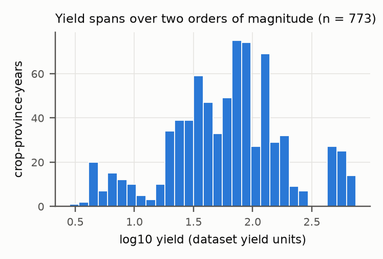
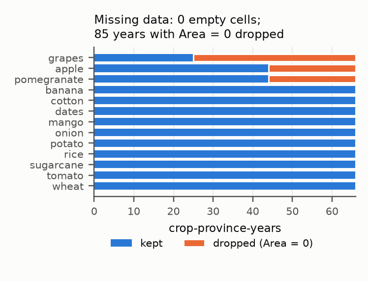
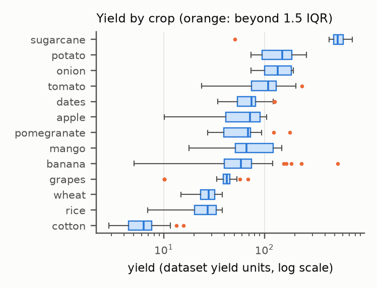
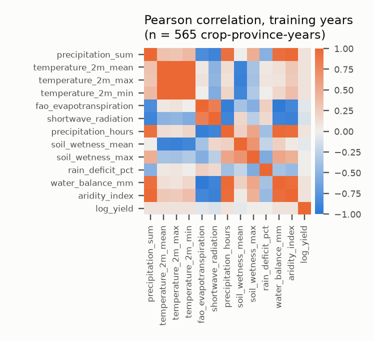
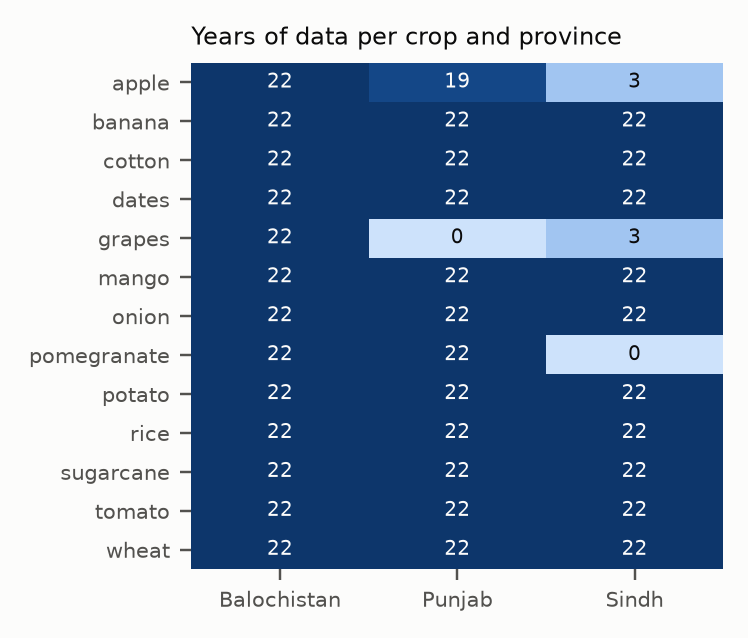
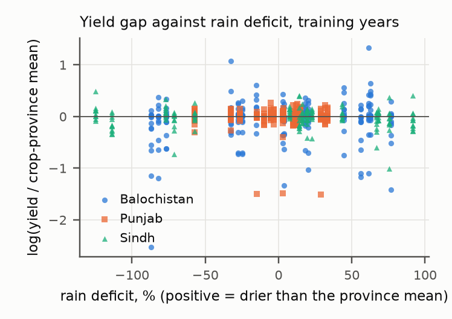
Features. Annual rain, mean, maximum and minimum temperature, evapotranspiration, solar radiation, rain
hours, soil wetness (mean and wettest month), three engineered drought features (rain deficit against the province's
training-year mean, water balance, aridity index), crop and province. Pipeline. Median imputation, standard
scaling and one-hot encoding inside a scikit-learn Pipeline, fitted on training rows only. The regressor
does not predict yield directly (crops differ about 100 times): it learns the log-scale gap between a year's yield and
the crop-province training average, plus a straight-line year trend (none, per crop, or per crop and province). Year
is never a model input; at prediction it is pinned to 2022. Split by year. Train
2001-2016 (565 rows, 73%), validation 2017-2019
(106, 14%), test 2020-2022 (102, 13%).
Models. Three baselines (overall mean, crop-province mean, crop-province mean plus year trend) and three
algorithms. Tuning. GridSearchCV with 5-fold GroupKFold grouped by year, so all
crops of one year stay in one fold (they share the same weather), scored on log-MAE. Grids:
Ridge: trend none, per_crop, per_crop_province; alpha 0.1, 1.0, 10.0, 100.0. Random Forest: trend none, per_crop, per_crop_province; n_estimators 200, 400; max_depth None, 8, 15; min_samples_leaf 1, 3, 5. Gradient Boosting: trend none, per_crop, per_crop_province; n_estimators 100, 300; learning_rate 0.03, 0.1; max_depth 2, 3. Selection on validation log-MAE; the test years were scored once.
Saved with joblib; versions pinned in requirements.txt.
| Model | Val R² | Val MAE | Test R² | Test MAE | Test RMSE | Test log-MAE |
|---|---|---|---|---|---|---|
| Baseline: overall mean | -0.002 | 91.7 | -0.030 | 100.4 | 173.6 | 0.937 |
| Baseline: crop-province mean | 0.877 | 20.9 | 0.832 | 34.7 | 70.1 | 0.312 |
| Baseline: mean + year trend | 0.919 | 14.8 | 0.875 | 30.3 | 60.5 | 0.345 |
| Ridge regression | 0.924 | 15.2 | 0.878 | 29.5 | 59.7 | 0.340 |
| Random Forest | 0.917 | 15.2 | 0.873 | 30.6 | 60.9 | 0.360 |
| Gradient Boosting (chosen) | 0.924 | 14.9 | 0.885 | 29.7 | 58.0 | 0.341 |
MAE and RMSE in dataset yield units. Chosen on validation log-MAE: Gradient Boosting (learning_rate 0.03, max_depth 2, n_estimators 100, trend per_crop_province).
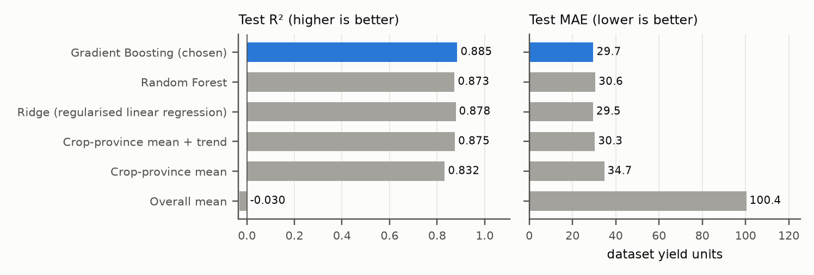
On the 2020-2022 test years, compared with using each crop's average yield per province, the model was better on R² 0.885 against 0.832, MAE 29.7 against 34.7 and RMSE 58.0 against 70.1; it was not better on log-MAE 0.341 against 0.312. The pass test (R² and MAE) was chosen after seeing the test results. A year trend alone, with no climate inputs, scores R² 0.875. Small differences between crops are weak evidence. Validation R² is 0.039 higher than test R² for the chosen model: some over-fitting to the validation years, expected with three years per split. Test log-MAE by province: Balochistan 0.552, Sindh 0.214, Punjab 0.208. Permutation importance on the validation years: crop 1.148, province 0.369, the strongest weather input (rain_deficit_pct) only 0.0101.
Absolute yields are rough: the model is pinned to 2022, and its typical-year prediction, set against the mean actual yield of 2020-2022, was 0.80 to 1.15 times the actual for the middle half of the 34 crop-province pairs, but 0.21 times for mango in Balochistan and 2.19 times for cotton in Sindh. Trust the ends of the ranking more than a single predicted number. The likely range the apps show is the nominal 80% spread of validation-year errors. It covered 58% of the test rows, so it is optimistic.
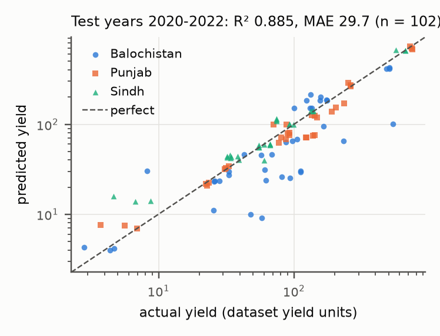
Most crop-province pairs lie near the diagonal. The points far below it, mostly Balochistan, are years whose actual yield was much higher than predicted: a model built on crop-province averages and a straight-line trend does not follow such jumps.
All three front ends load the same saved pipeline through one shared package
(src/climate_machine_learning/), so they show the same numbers: below, all three show rice in Sindh in
its driest real year at the same predicted yield and share of a typical year. Local web app: FastAPI with
/api/v1/predict, /api/v1/recommend and /api/v1/metrics, HTML pages, input
validation (inputs outside the trained range are refused with a 422 that states the range) and error messages with no
fallback numbers; the same app is hosted at climate-machine-learning.vercel.app/. Streamlit Community Cloud: input form,
prediction with a likely range, one chart: climate-machine-learning-nb5v2knz3htvseqqpuhvrk.streamlit.app/. Hugging Face Hub: model card and pipeline at
huggingface.co/SMHunain/crop-yield-drought-pakistan; no Space was built (group decision).
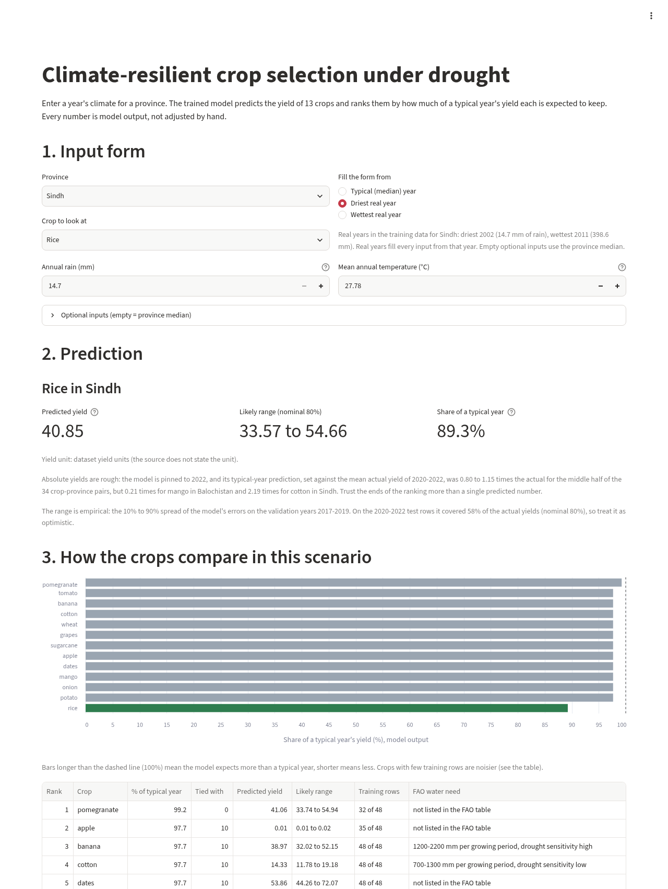
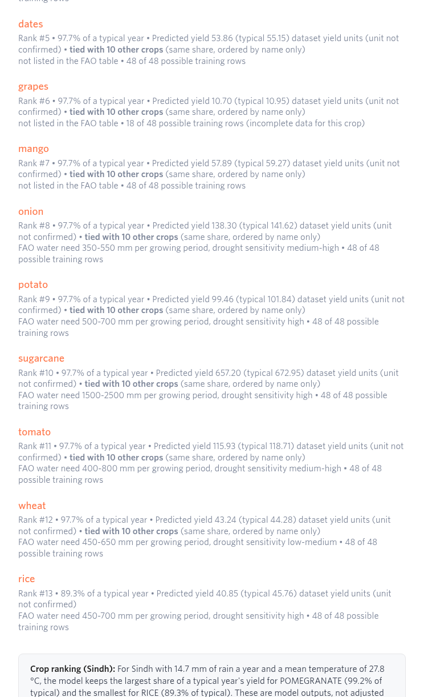
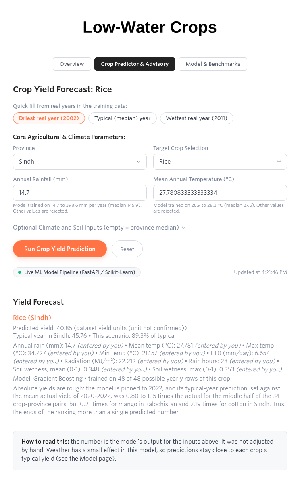
| Proposal | Built |
|---|---|
| Target: yield in kg/ha | Dataset yield units: the source does not state the unit, and values such as rice around 20 to 40 cannot be kg/ha. |
| Split 70/15/15, ordered by year | Year split 73%/14%/13%, so whole years stay together. |
| Several sources (national rain and temperature, city weather, PMD drought centre, Punjab irrigated area and district yields) | Two sources used: the crop dataset and NASA POWER. The national series end in 2016 and are not provincial, the Punjab tables cover Punjab only, the city weather has no Balochistan, and the drought centre has no downloadable series. |
| Features: rain deficit, irrigated area share | Rain deficit built; irrigated area share not built (no source has it for all three provinces). |
| Baseline, linear regression, Random Forest, Gradient Boosting, 5-fold tuning | Same, with Ridge as the linear model and folds grouped by year to avoid leakage across crops of one year. |
| Ranked list of low-water crops | All 13 crops ranked by share of a typical year; FAO water need shown as context for the 8 crops it lists, so the user sees water use beside the ranking. |
| Optional best-crop classification | Not built (future work). |
The proposal's success criterion is met: test R² 0.885 (target above 0.7) against the overall mean-yield baseline's R² -0.030 and MAE 100.4 (model MAE 29.7). It is checked against a stricter baseline too (section 5).
Limitations. Few rows (one per crop, province and year) from 22 years; weather and soil wetness are
province-level and identical for every crop in a province; within-province ranges are narrow, so inputs outside them
are refused rather than extrapolated; three crops have missing years; the yield unit is not confirmed; the win over
the crop-province mean holds on R² and MAE only, chosen after seeing the test results, and is mostly the year trend;
the likely range is optimistic; tied shares are ordered by name only; the soil wetness source adds little.
Future work. District or farm-level data and irrigation share, more years, a best-crop classifier, a model that
explains weather effects per crop, and a Hugging Face Space for the Gradio app already built in
hf_space/.
| Name | Roll number | Role | Parts |
|---|---|---|---|
| Syed Muhammad Hunain | CT-24281 | Model creation and documentation | Data, EDA, aggregation; Pipeline, tuning, evaluation; Ranking and inference; README, checks, report |
| Muhammad Afzal | CT-24263 | Frontend and deployments | Frontend pages; Deployments |
| Ayesha | CT-24309 | Backend | API and validation |